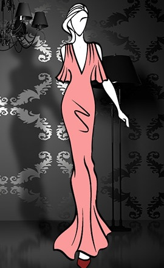
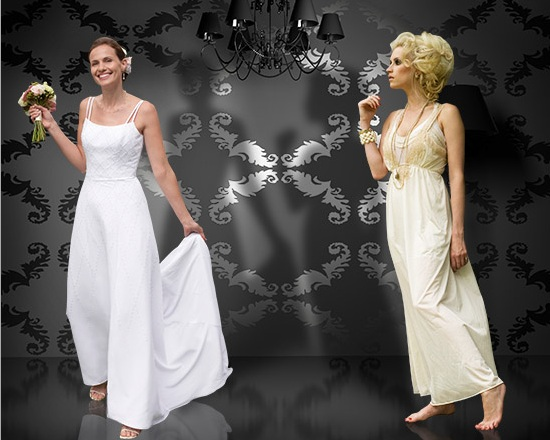
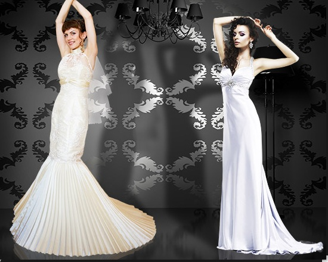
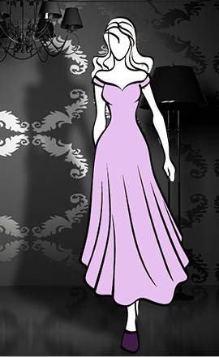
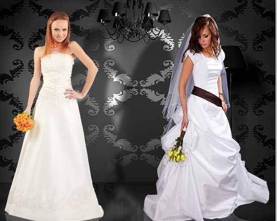
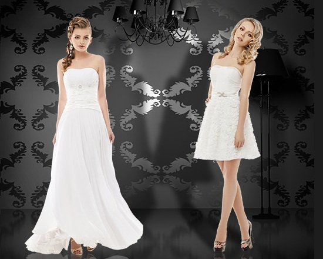

Свадебное платье для высокой девушки
Так уж случилось, что вы высокая… Вы можете выбрать любую модель, главное – подчеркнуть ваш рост.
- "да": Вы можете примерить наряд с низкой талией, прямые, кружевные, гречские, пышные, со шлейфом. Ваше одеяние должно выставлять напоказ ваш рост. Ищите платья с длинными рукавами, которые выходят за запястье. Определенно можно носить облегающее, чтобы подчеркнут фигуру. Длинная фата так же очень подойдет.
- "нет": Модели с оборками, которые будут добавлять слои. Держитесь подальше от шляпок, т.к. они еще больше возвысят Вас.
Миниатюрная девушка
Невысокая девушка, худое телосложение. Лучший способ - наряд по форме вашего тела.
- "да": Миниатюрные будут отлично выглядеть в а-силуэте, приталенном в стиле руласка или греческом. Кружево будет смотреться великолепно. Низкая талия с юбкой визуально увеличит ваш рост. Модели из атласа, шифона, тафты позволит вам казаться стройнее. Одевайте каблуки.
- "нет": Пышные или с пышными юбками. Держитесь подальше от больших бантов и оборки на нижней половине наряда. Суженые больших размеров могут выбрать пышные платья, юбки которых начинаются прямо под грудью.
Убедитесь, что вы выбрали наряд, который льстит Вашей фигуре и Вы чувствуете себя в нем уверенно.